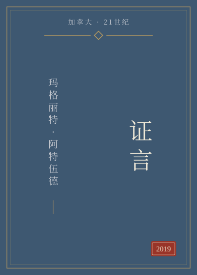
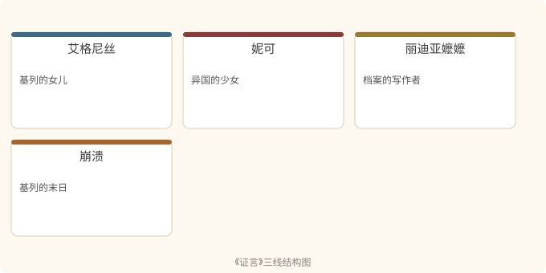

证言
一、基本信息
| 作者 | 阿特伍德 |
|---|---|
| 成书/出版 | 2019年（作者页 B107 口径：证言（2019）） Margaret Atwood — Encyclopaedia Britannica（百科全书） |
| 国别/地区 | 加拿大 |
| 时代 | 现当代 · 21世纪 |
| 体裁 | 长篇小说 |
| 语言 | 英语 |

《证言》三线结构图（主题·结构图）
二、创作背景
作者页（B107）：阿特伍德 major_works 载'证言（2019）'（B107 作者页定位，详见 shinv 条核对）。
题材（通说待核）：《使女的故事》续篇——三个女性的'证言'揭示基列国崩溃。
三、内容脉络
三条证言线：艾格尼丝、妮可、丽迪亚嬷嬷（通说待核）。
'使女'制度的内部记录（通说待核）。
四、主要人物表
| 人物 | 身份 | 说明 |
|---|---|---|
| 丽迪亚嬷嬷 | 嬷嬷 | 权力档案（通说待核） |
| 艾格尼丝/妮可 | 女儿们 | （通说待核） |
五、主题与艺术特点
- 极权的档案化（通说）。
- 下一代的三种命运（通说待核）。
- 续写的合法性（通说）。
六、影响与评论
- 作者页：阿特伍德晚年续作（B107 作者页口径）。
Margaret Atwood — Encyclopaedia Britannica（百科全书） - 2019年布克奖第二次获奖（通说待核）。
Margaret Atwood — Encyclopaedia Britannica（百科全书）
七、阅读建议
难点
- 与前作的互文。
- 三线切换。
- 《证言》（上海译文出版社，通说待核）。
- 英文原版。
必先读《使女的故事》。
八、待核实
- 2019年布克奖（与伯纳丁·埃瓦里斯托并列说）核对。
- 三线人名核对。
- 基列国档案设定待核。
本页主要来源
阿特伍德的其他收录作品：使女的故事